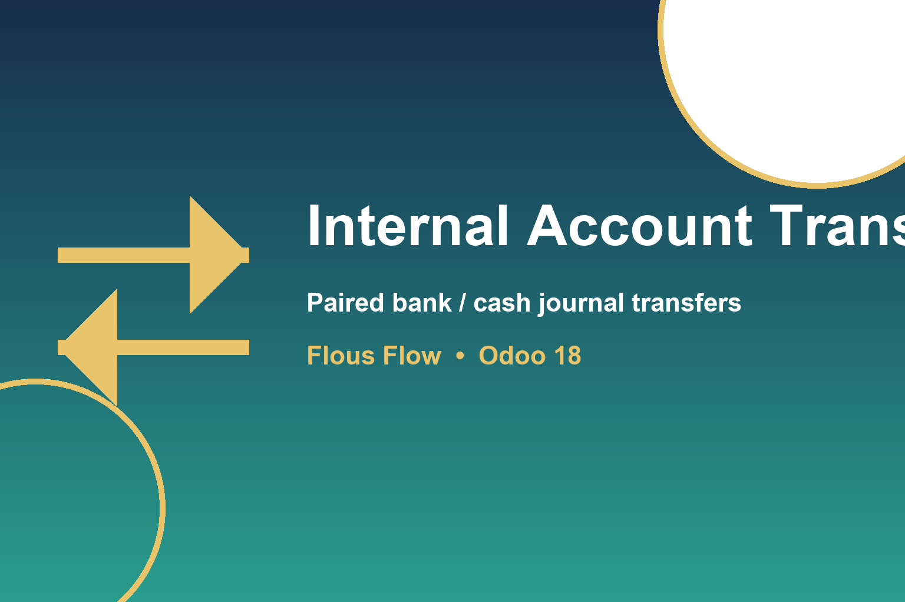

Record money movements between your own bank and cash journals with a single document. Posting an outbound transfer automatically creates the matching inbound payment in the destination journal, so both sides of the movement stay balanced and traceable.
Odoo 18 Community / Enterprise with the Invoicing (account) module installed. Set the company's Internal Transfer Account in Accounting configuration.
Contact Flous Flow at support@flousflow.com